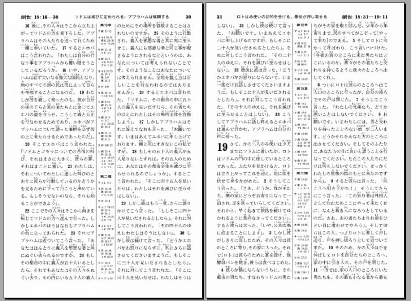
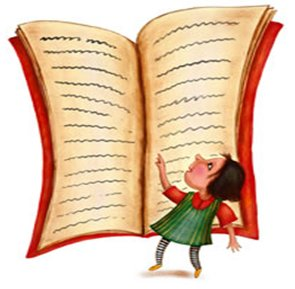

聖書とはどんなもの？
聖書って一冊の大きな本？
聖書について最初に発見することの一つは、それが1冊の本ではなく、なんと66冊もの書のコレクションだということです！本とは言っても、聖書は実際には物語、歴史、詩や歌、伝記、複数の手紙（Eメールなんてなかった時代 です）で構成されています。
聖書には非常に多くの種類の文章が含まれているため、多くの現代の本と同じように、聖書は通常、最初から最後まで読むことはありません（確かに読めますが）。むしろ、信者は通常、特定の箇所を読むために聖書を開きます。それは、イエスについての物語や神に捧げられた賛美の歌などです。
上のイラスト（また、この本の冒頭の大きな絵）は、聖書の書がどのようにグループ分けされているかを示しています。
聖書の歴史と、聖書がどのように書かれたのかについて少し知ると、聖書がなぜそんなに多くの異なる書で構成されているのか、理由を理解しやすくなります。神は、約3,000年前に人類へのメッセージを書き留めるよう人々を促し始めました（初期の日付は少しあいまいです）。約1,600年の間に、さまざまな時代、世界中のさまざまな場所にいた、少なくとも40人が、神の言葉を記録しました。これほど多様な書き手がいたにもかかわらず、聖書が語る物語は基本的に一つです。人々をイエスのところに導く物語です。イエスは、世界に向けた神の究極のメッセージなのです。
聖書はひどく長編の本のように見えるかもしれません。聖書は不可思議で理解するのが難しいと感じたり、聖書とはそういうものだと聞いたことがある人がいます。そういう人は、牧師や司祭だけが聖書を真に理解できると言われたのかもしれません。
だからこそ、聖書が「本当は」どういうものなのかを知ることが、役に立つのです。聖書は、あらゆる場所にいる人々に対する神のメッセージであり、普通の人々（誰でも！）に読まれることを意図して書かれているものです。

遺した言葉とは何ですか？
「遺した言葉」というと、遺言（「最後に伝えたい意志」）をイメージするかもしれません。遺言とは、死んだ後に財産や所有物をどうするかについての意向を表明する法的文書です。聖書では、イエスが地上に来るずっと前に、神はそもそも、人間が彼を「唯一の」神として崇拝するべきであるという意向を表明されました。その見返りに、神は人の罪を赦されるのです。聖書の最初の一編である旧約聖書は、人類が神の御心にどのように応じたかを記した物語です。
人類は神の御心に従わなかったので、神は人類が赦される新しい方法を設けました。彼の一人息子であるイエスを地上に送ったのです。その目的は、人類の罪を背負ってイエスを死なせることでした。イエスとその信者たちの物語は、神の人類に向けた意志の物語、新約聖書です。そのようにして、聖書は旧約聖書と新約聖書に分かれています。イエスが世に生まれ出る前に書かれた書と、後に書かれた書です。

聖書の一節を見つけるにはどうすればいいですか？
聖書の書の名前に慣れると、聖書が格段に読み易くなります。難しいことのように思えるかもしれませんが、すべての名前を順番に覚えておくのが一番役に立ちます。1日に10人の名前を覚えてみてください。次の10人を暗記し始めたら、最初に暗記した名前を必ず言います。そうすれば、すべてを順番に暗唱することができます。
旧約聖書と新約聖書に分かれた聖書の書のリストが次のページにあります。暗記するためのガイドとしてご利用ください。発音しにくそうな名前もあります。たとえば、ヨブ記は（英語では）末尾に「e」が付いて[jobe]のように発音します。書の名前の発音方法について質問がある場合は、遠慮なく聖書研究の先生やあなたが通っている教会の牧師さんに教えてもらってください。
聖書の任意のページを開くと、多数の小さな段落があり、それぞれに番号が付いているのがわかります。これらは節と呼ばれています。節が集まったものは章と呼ばれます（章によってそこにある節の数はまちまちです）。唯一の例外は、旧約聖書のオバディア書、新約聖書のフィレモンへの手紙、ヨハネの手紙二、ヨハネの手紙三、そしてヨブ記で、これらは章に分かれていません。

聖書の特定の箇所について述べられるとき、「章と節」と呼ばれるものが使われます。ヨハネによる福音書の第3章の第16節を見つけてほしいと頼まれる場合、メモにはおそらく次のように書かれているでしょう：「ヨハネ3:16」。
聖書の書の名前を覚えておくと便利なのはこのためです。ヨハネによる福音書は新約聖書の4冊目だとわかります。ヨハネによる福音書を見つけたら、3番目の章、最後に16節目を探します。聖書の箇所については、すべて上記、「ヨハネによる福音書3:16（本の略名が使われることもあります）」のように書かれます。複数の節が言及されている場合は、「出エジプト記20：1-17」のように書かれます。これは、出エジプト記の第20章の最初の17節を見つければよいということです。簡単ですね！
- 創世記
- 出エジプト記
- 出エジプト記
- 民数記
- 申命記
- 申命記
- 士師記
- ルツ記
- サムエル記上
- サムエル記下
- サムエル記下
- 列王記下
- 歴代誌上
- 歴代誌上
- エズラ記
- ネヘミヤ記
- エステル記
- ヨブ記
- 詩編
- 箴言
- コヘレトの言葉
- 雅歌
- イザヤ書
- エレミヤ書
- 哀歌
- エゼキエル書
- ダニエル書
- ダニエル書
- ヨエル書
- アモス書
- オバディア書
- ヨナ書
- ミカ書
- ナホム書
- ハバクク書
- ゼファニヤ書
- ハガイ書
- ゼカリヤ書
- マラキ書
- マタイによる福音書
- マルコによる福音書
- ルカによる福音書
- ヨハネによる福音書
- 使徒言行録
- ローマの信徒への手紙
- コリントの信徒への手紙一
- コリントの信徒への手紙二
- ガラテヤの信徒への手紙
- エフェソの信徒への手紙
- フィリッピの信徒への手紙
- コロサイの信徒への手紙
- テサロニケの信徒への手紙一
- テサロニケの信徒への手紙二
- テモテへの手紙一
- テモテへの手紙二
- テトスへの手紙
- フィレモンへの手紙
- ヘブライ人への手紙
- ヤコブの手紙
- ペトロの手紙一
- ペトロの手紙二
- ヨハネの手紙一
- ヨハネの手紙二
- ヨハネの手紙二
- ユダの手紙
- ヨハネの黙示録